四个方向各一案，全部取自已定稿的主题调色板与字阶（lib/theme/zephyr_theme.dart）。
字标固定为英文 ZEPHYR（serif，对应主题的 display 角色）+ COMICS（monospace，对应 metadata 角色）。
图形画在 64 格的方框里，有效范围约 66%，与 Android 自适应图标的安全区一致。
一页纸的下角被风掀起，翻折出来的角用米金，风从折角的边缘抽出去，两道向右上散开。 Zephyr 就是西风，而卷角本身就是「翻页」这个动作 —— 阅读器里最核心的那一下。 折角放大到纸宽的 43%，缩到 24px 时剩下的那点形状仍然读得出是「一张纸」。

三格错开叠放，比例直接用书架的封面比 3:4（_aspectRatio）。
两格是灰描边、最前一格实心米金 —— 米金在应用里本来就是「当前 / 选中」的颜色
（阅读模式的分段控件、书架的选中态），所以最前面那一格读作「正在读的这一本」。
四个方向里它最直白地说明「这是漫画阅读器」，代价是轮廓偏几何、少一点纸感。

把 Z 当作一张对折的纸：上半面墨色、下半面米金，折痕落在对角线的 0.4 处（不是正中， 免得看起来像两个等分的色块），底横的末端翘成风尾。 缩到 24px 最不容易糊，笔画也最粗；代价是拉丁字母和全中文的界面稍微脱节， 适合当成纯标记，让界面去承担中文。

一本合上的书：米金书脊压在最左，封面用墨色两像素描边，里面三行页码线、末行故意短一截。 四个方向里它最「静」、最像纸本书，和阅读页的纸张、留白一脉相承； 代价是不容易一眼看出「阅读器」，需要和字标一起出现才稳。
